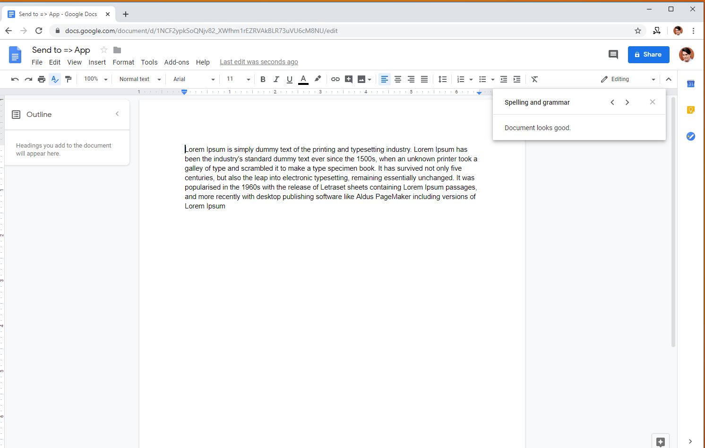

Thank you for choosing Send 2
With this easy app you'll be able to send selected text to a selected google doc
More will be added soon (SMS,Sheets,Facebook,etc)
If you find the app useful, please support me by donating at: https://ko-fi.com/send22
I will greatly appreciate it and it will help me continue improving on this and more useful apps. If you need help with anything or have any feedback please email me at Gus@geekspired.com
Instructions:
(Click on the images to expand them)
| Click on the Send2 Icon on your google chrome extension bar and click on the authorize button. This will allow the app to select files to store information | Once the app is authorized, click on the document that you wish to use in order for the app to save the text | Select the text you want to save, right click it and click the Send2 icon to send the text to the Google Doc |  | You should see the copied text in the selected google doc! |